Acervo de Moedas e Cédulas Históricas
Minha coleção de artigos colecionáveis é focada em moedas e cédulas de diversos países e também em dinheiros antigos que marcaram épocas importantes da história do Brasil. Cada peça representa não apenas um valor monetário, mas um pedaço da cultura, política e economia de seu tempo. Meu acervo busca preservar a história através do dinheiro, mostrando como diferentes nações e períodos expressaram sua identidade por meio de suas moedas e cédulas.
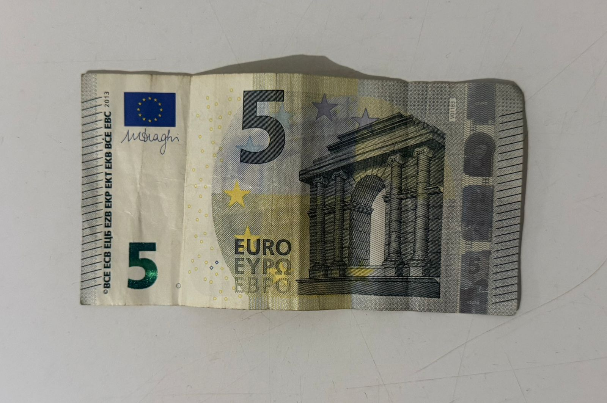
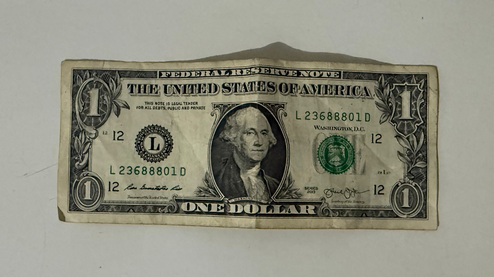
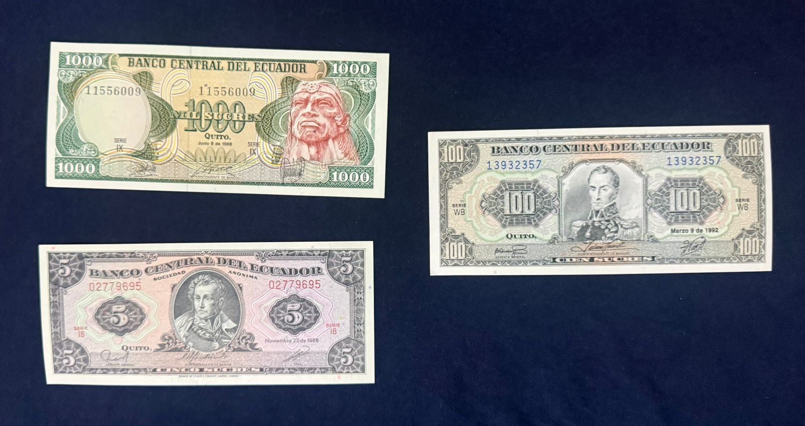
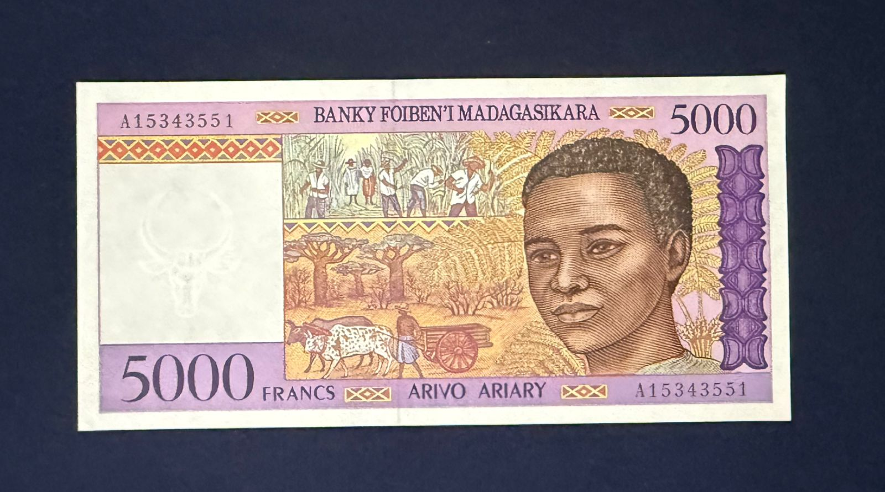
Reúnem notas de diversos países, cada uma representando a cultura, história e identidade de sua nação. São peças que mostram símbolos, líderes e momentos importantes da economia mundial. (Euro (€) – Moeda oficial de vários países da Europa, representa a união econômica do continente e possui designs que simbolizam pontes e arquitetura europeia; Dólar Americano (US$) – Utilizado nos Estados Unidos, é uma das moedas mais influentes do mundo, conhecida por estampar presidentes e símbolos nacionais importantes; Sucre – Antiga moeda oficial do Equador, substituída pelo dólar americano no ano 2000. Representa um período importante da história econômica do país; Ariary – Moeda oficial de Madagascar, destaca elementos culturais e naturais do país africano, refletindo sua identidade nacional).
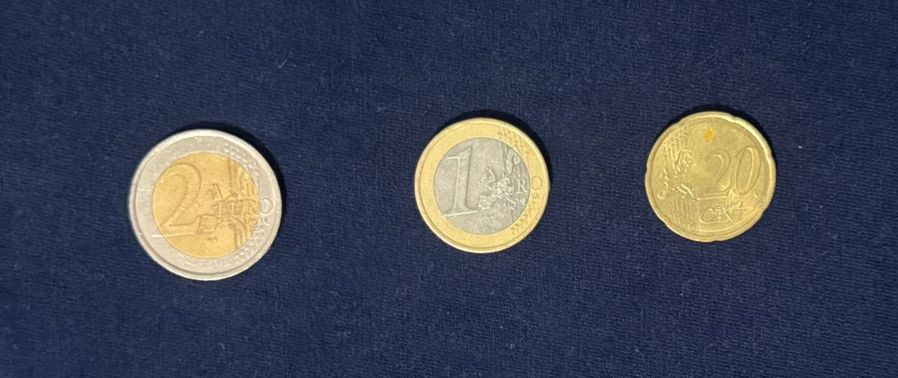
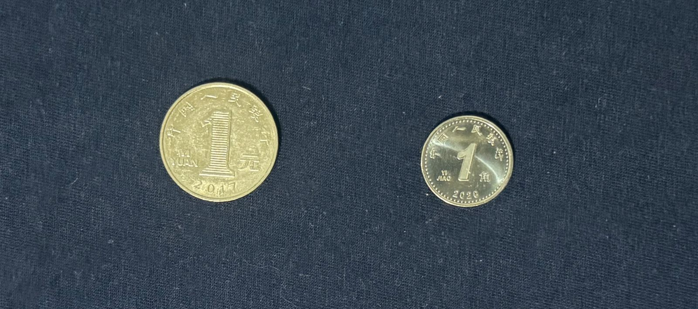
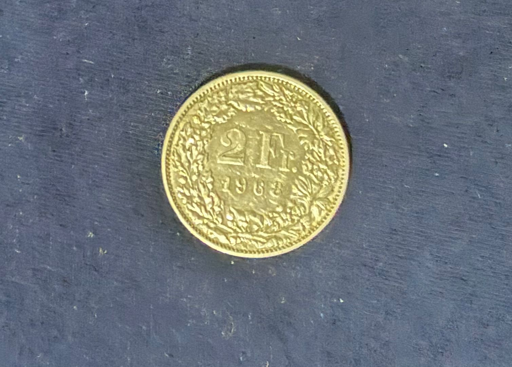
Minha coleção também conta com moedas metálicas de diferentes países, cada uma representando a cultura e a identidade de sua nação. (Euro (€) – Utilizado por diversos países da Europa, as moedas apresentam um lado comum europeu e outro com símbolos específicos de cada país membro; Yinhang (China) – Moeda chinesa que representa a tradição e a história milenar do país, trazendo inscrições e símbolos ligados à cultura chinesa; Franco Suíço (CHF) – Moeda oficial da Suíça, conhecida por sua estabilidade econômica. Suas moedas geralmente trazem símbolos nacionais e elementos históricos suíços; Won (Coreia do Sul) – Moeda oficial da Coreia do Sul, trazendo elementos culturais e figuras históricas importantes do país; Iene (Japão) – Moeda oficial do Japão, com caracteres japoneses e elementos que representam a cultura e a tradição do país; Dólar Americano (Estados Unidos) – Moeda amplamente utilizada e influente na economia mundial, com símbolos históricos nacionais; Euro (França) – Como país integrante da União Europeia, a França utiliza o euro, e suas moedas possuem um lado personalizado com símbolos franceses).
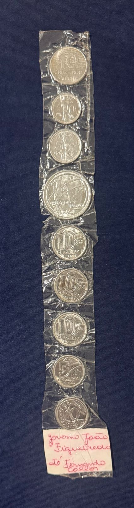
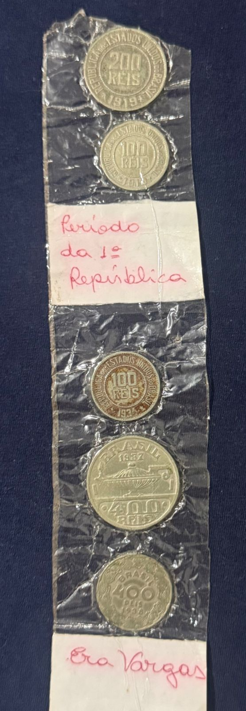
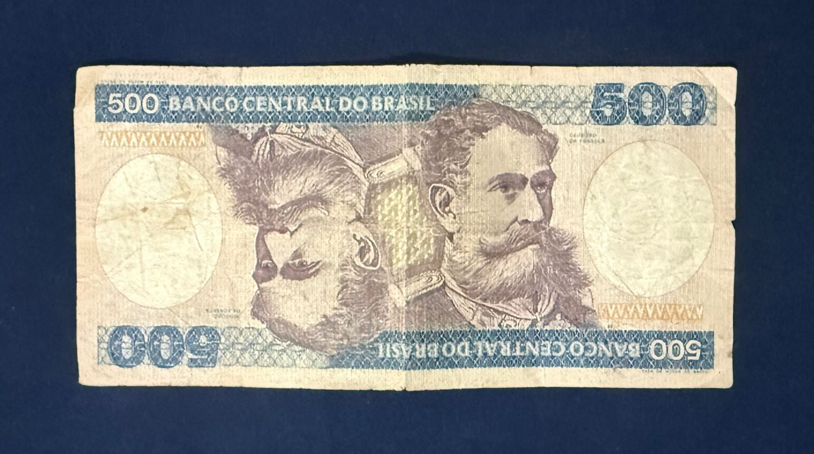
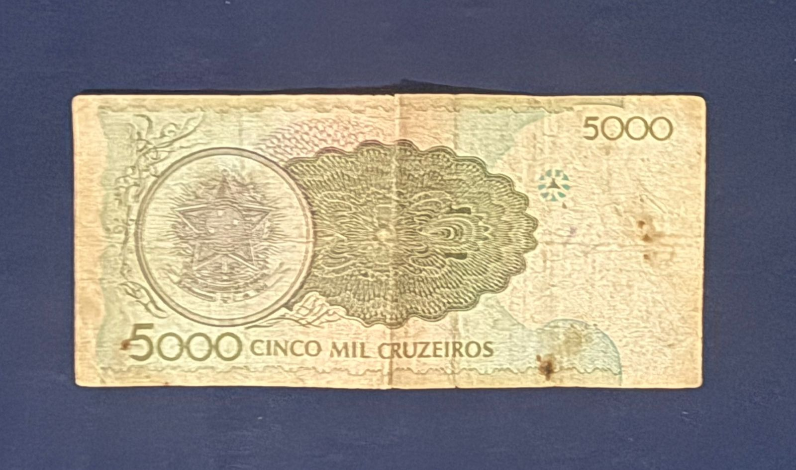
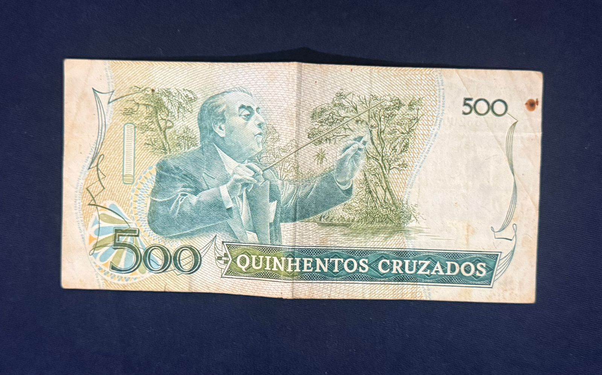
Minha coleção também inclui moedas e cédulas que marcaram diferentes períodos da história econômica brasileira. (Governo João Figueiredo até Fernando Collor – Período de grande instabilidade econômica, com várias mudanças de moeda para tentar controlar a inflação, como Cruzeiro e Cruzado; Primeira República (1889–1930) – Fase inicial da República no Brasil, quando circulava a moeda Réis, representando o início da organização econômica republicana; Era Vargas (1930–1945) – Período de importantes transformações políticas e econômicas no país, com mudanças que impactaram diretamente o sistema monetário brasileiro; 500 Cruzeiros – Cédula que circulou durante o período do Cruzeiro, representando uma fase marcada por inflação e reformas econômicas; 5 Mil Cruzeiros – Nota de valor mais alto, utilizada em períodos de forte desvalorização da moeda devido à inflação; 500 Cruzados – Cédula criada durante o Plano Cruzado, em uma tentativa de estabilizar a economia brasileira nos anos 1980).
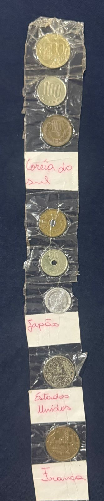
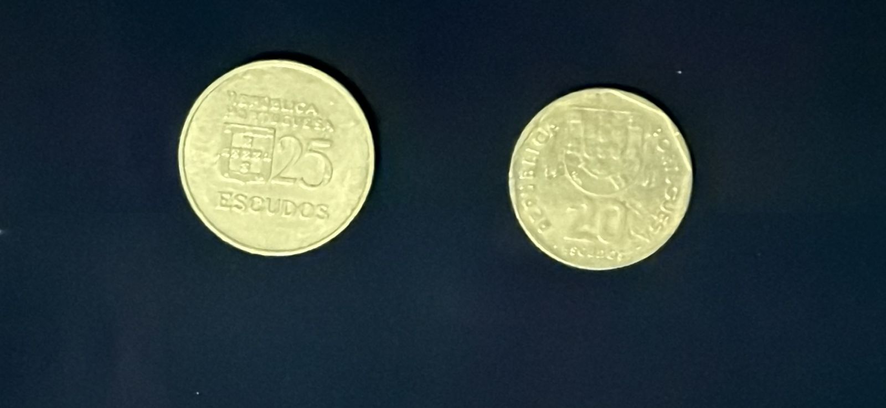
A coleção inclui moedas antigas de diferentes países, que já saíram de circulação e representam momentos importantes da história econômica mundial. Coreia do Sul – Moedas antigas do Won que demonstram fases importantes do desenvolvimento econômico sul-coreano; Japão – Moedas antigas do Iene que mostram períodos anteriores às versões modernas, refletindo mudanças políticas e econômicas do país; Estados Unidos – Moedas antigas do Dólar com designs históricos e diferentes materiais utilizados ao longo do tempo; França – Moedas do antigo Franco Francês, utilizadas antes da adoção do Euro, representando a economia francesa do século XX; Escudos Portugueses (Portugal) – Moedas do antigo Escudo, utilizadas antes da entrada de Portugal na zona do Euro, marcando uma fase tradicional da economia portuguesa).
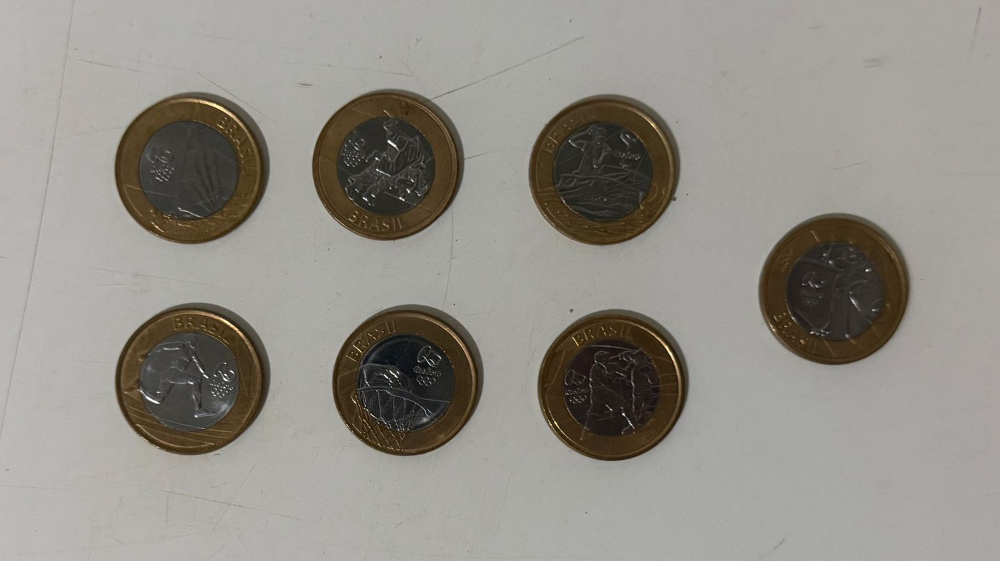
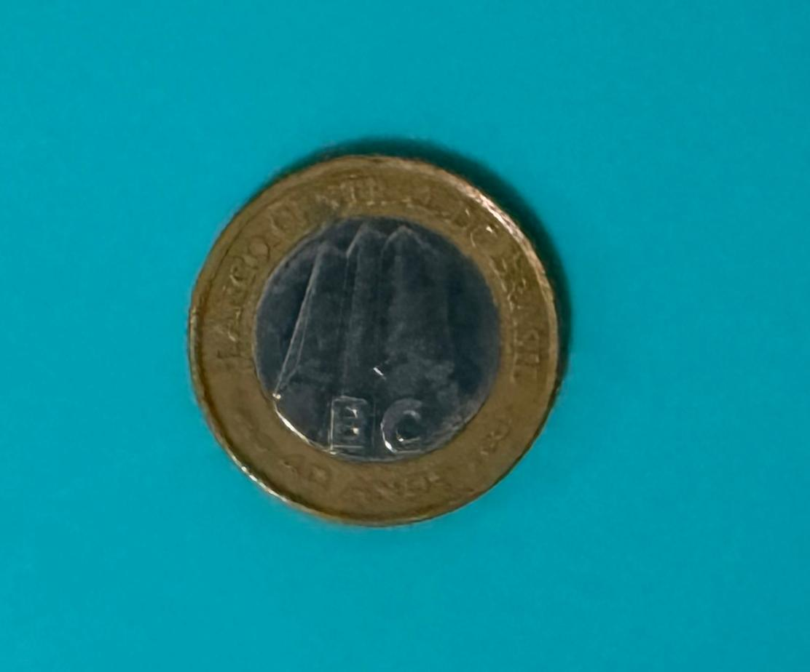
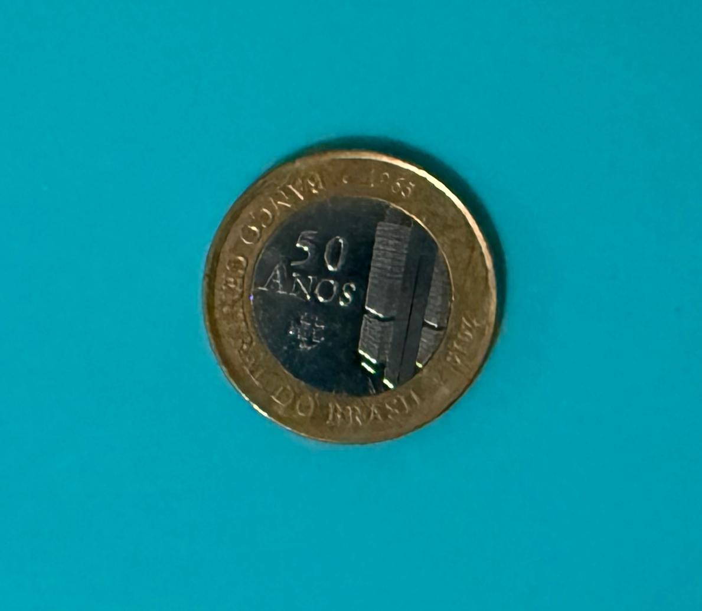
Itens com edição limitada, erro de fabricação ou difícil circulação. São os destaques da coleção pelo seu valor histórico e colecionável. Moedas Olímpicas Rio 2016 – Série especial lançada em comemoração aos Jogos Olímpicos realizados no Brasil, com diferentes modalidades esportivas representadas nas moedas; 40 Anos do Banco Central – Moeda comemorativa criada para celebrar o aniversário do Banco Central do Brasil, destacando sua importância para a economia nacional; 50 Anos do Banco Central – Edição especial em homenagem aos 50 anos do Banco Central, simbolizando sua trajetória e contribuição para a estabilidade econômica do país).